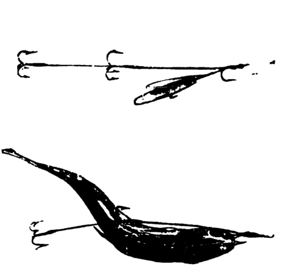
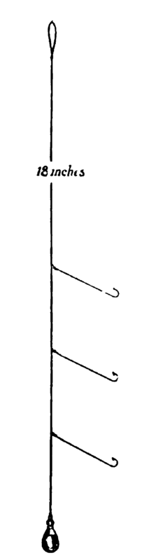
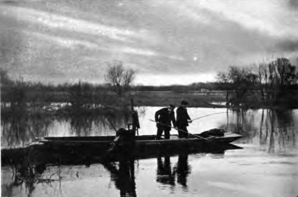
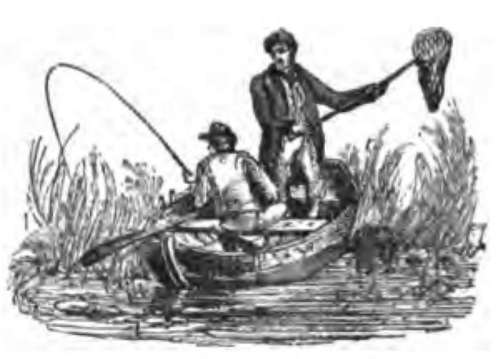
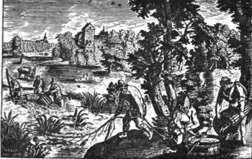

Chapter XIII. Perch: "Paternoster" And "Float-Fishing"
Description
This section is from the book "Fishing", by Horace G. Hutchinson. Also available from Amazon: Fishing.
Chapter XIII. Perch: "Paternoster" And "Float-Fishing"
The freshwater perch (Perca-fluviatilis) is a typical member of the Percidae family, and is not only one of the most beautiful of the fish which inhabit our rivers and lakes, but ranks as a prime favourite with anglers because of the excellent sport it gives. A distinguishing feature is the front dorsal fin, with thirteen or fourteen sharp spinous rays-a weapon of offence and defence. When he sallies forth with prickly dorsal.fin erect, like a warrior all ready for the combat, even the pike respects him, for he would be a tough antagonist to swallow. But when quiet and at rest the perch sheathes his back fin and " slopes swords."
When in full season (September to January) his golden-brown sides are variegated with five, and sometimes six, transverse bars of dark-green bronze colour, shaded with a lovely iridescence, as also are the gill-covers; the ventral fins and tail are a brilliant red. Perch sometimes are capricious in feeding, and appear to be very sensitive to electric changes in the atmosphere. In hot weather, with a south wind blowing, they usually feed all day; at other times, not at all in the day, but generally at early morning and during the evening ; they like a gravelly bottom where the current is not too swift, especially near to growths of water-lilies. In winter perch are frequently found under banks hollowed and washed out by the flow of streams, near submerged roots of trees growing by the river-side, moss-grown weirs, and old floodgates. There are many such places on most rivers.
An old tree leaning over and partly in the Thames, near the entrance to the Abbey Stream, Penton-Hook, some winters ago, in two hours furnished me with seventeen handsome perch, caught with minnows on paternoster tackle. Perch spawn in May, and during summer are somewhat solitary in their habits; but after August they become gregarious, consorting together, and where one or two are caught others may be expected to find their way to the angler's fish-pannier. The fecundity of perch is remarkable. Frank Buck-land, in his "History of British Fishes," states that he had two female perch sent him4 which weighed 3 lbs. 2 ozs. and 2 lbs. 14 ozs. He and his secretary counted their eggs, which numbered 155,620 in the larger fish and 127,240 in the smaller.
Fig. 16.- Fex Nell's Perch
Spinning Tackle.
Fig. 15.- Perch "Paternoster."
Perch Tackle.
21.- Paternoster Fishing For Perch.
The most " sporting way" to fish for perch is with paternoster; a dexterous angler can fish awkward places-which are generally the best- where 44 floating" or " spinning" would fail of success.
Paternostering for perch is much the same as that described on page 104 for pike, except that the tackle is more delicate. To make it, knot carefully together four or five feet of trout-gut, selected round and without flaws-for perch are strong fish, and frequently two are caught at the same time. To the bottom end of " pater "-trace loop a lead plummet of £ oz. or more, according to the depth and strength of the stream; about 8 inches above the plummet make a loop in the gut, and at intervals of 12 inches two other loops; to each of these the paternoster hooks are fixed by "hitch-knots." These hooks (size No. 6 or No. 7) should be whipped on to 5 inches of gut rather thinner than the trace, so that in the event of a " hang-up " to any obstruction occurring the hook-link will be the first to break. Bait the bottom hook with a well-scoured marsh or brandling worm, the middle with a small gudgeon, and the top hook with a minnow, thus offering the perch a choice of diet. Then the baited tackle should be dropped without splash into holes, eddies, near old moss-grown piles and sluice-gates, etc.-all of these, with others previously mentioned, being the favourite " holts" of perch. When the plummet has reached the bottom keep a " taut-line," slowly lifting the bait every two or three minutes, without taking them from the water, to other places in the vicinity. When a bait is taken, it will be unmistakable from the two or three sharp tugs or " knocks " given by the perch; then slacken the line slightly for a couple of seconds, gather up the " slack," and strike. Play and secure your perch; it is fatal to sport if one or two escape after being hooked, for they have a means of communicating to the others that there is " something wrong going on," and the " shoal" will move elsewhere.
Perch will often take a " spinning-bait" when other methods fail; a good size minnow, or small gudgeon, are excellent lures, on a " Pennell" tackle. See Fig. 16.
Push the lead down the bait's throat and into its belly, insert one of the hooks of upper triangle through the back about a quarter inch behind back fin, leaving the tail triangle to hang loose; adjust the movable lip-hook so as to crook the bait into the form shown; and finally pass the lip-hook through both lips of the bait, the upper lip first. If the bait does not spin " brilliantly," increase or diminish the curve by shifting the lip hook-which can be done without removing it from the bait, by loosening the surrounding coils on the hook's shank, pushing the gut through the loops (upwards or downwards as the needs may require) and again tightening the coils.
Floating a minnow or worm alongside hollow overhanging banks is often the means of catching big fish, and easily accomplished by the Nottingham method of fishing. Among the large specimens of perch I have known were fish of 4½ lbs. each-one caught in Wroxham Broad, Norfolk, the other in Ranworth Broad. A perch of 4 lbs. was caught, January 1879, at Sunbury, Thames; and, some years ago, one of 4¾ lbs. in Daventry Reservoir. My own best samples of Colne perch were seven weighing 10 lbs., the largest 3½ lbs.; and of the Loddon, five weighing 12 lbs. Fishing in Wiltshire so recently as January 24, 1899, my four largest perch out of eight weighed 2£ lbs., 3 lbs. 1 oz., 3¼ lbs., and 3 J lbs. The finest Kennet record was made by the late Mr. Francis Francis, who, from one day's catch, selected and took home with him thirty-seven perch weighing over 60 lbs., many exceeding 2 lbs. each. To quote the late J. J. Manley (" Fish and Fishing "): " If ever you should catch a 4-lb. perch, invite all your piscatorial friends to an oyster supper, 3s. 6d. per dozen, with Still Moselle, or, better, Chablis; for you have accomplished (as an angler) the object of your life, and fulfilled your mission-you have nothing else worth living for!"

Continue to:
- prev: Chapter XII. The Perches (Percides)
- Table of Contents
- next: Chapter XIV. The Carp Family (Cyprinias)